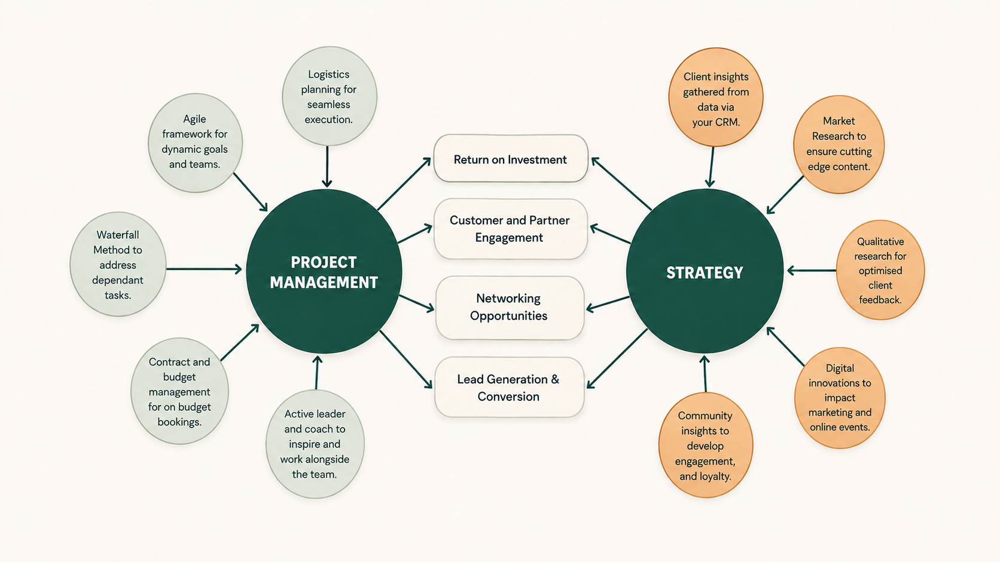

Professional profile
I build commercial systems around the way people actually work.
I bring together Salesforce and marketing automation, commercial judgement, operational design and implementation leadership to turn complex problems into practical systems that teams can adopt and use.
Professional about me
Strategy translated into systems people use.
My recent work combines hands-on Salesforce and marketing automation delivery with commercial strategy, operational design and company-wide implementation. I identify the need, shape the solution, secure approval, deploy it into production and remain accountable for how it performs in practice.
At Fresh Start in Education, the systems I have developed are available across a company of 30+ users, with daily use concentrated in two core teams. Through Downs Community Consulting, I also publish research-led community-strategy and MCAE frameworks.
Earlier roles developed my experience in team leadership, community engagement and large-scale operational delivery across Australia, the United States and the United Kingdom. That background continues to shape how I approach change: with structure, clear ownership and close attention to the people who will use what is built.
The intersection
Where project management and strategy reinforce one another.
My work is strongest where operational delivery, research, leadership, technology and commercial thinking need to work as one connected set of capabilities.
Connected capability
A joined-up view of how I deliver results.
This is an illustration of how I connect skills to support shared outcomes—not a fixed process or sequence.
